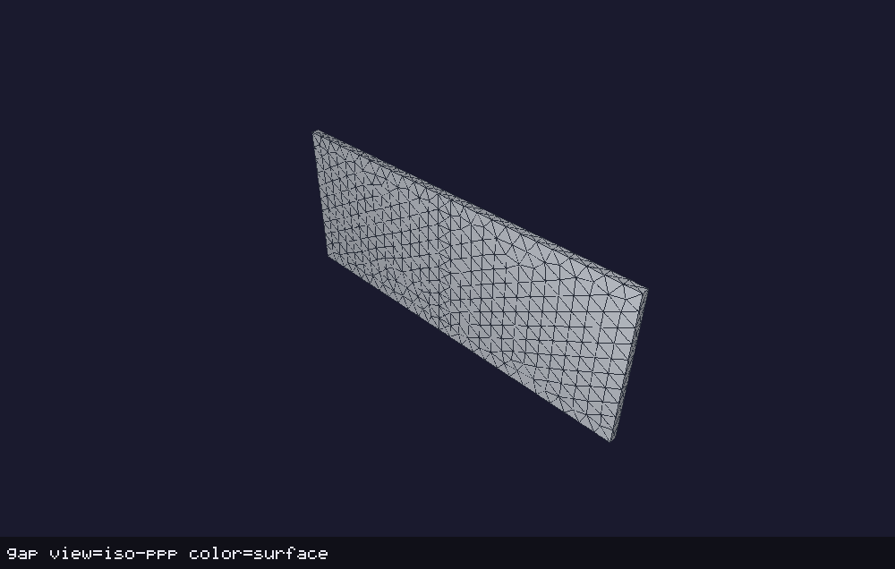
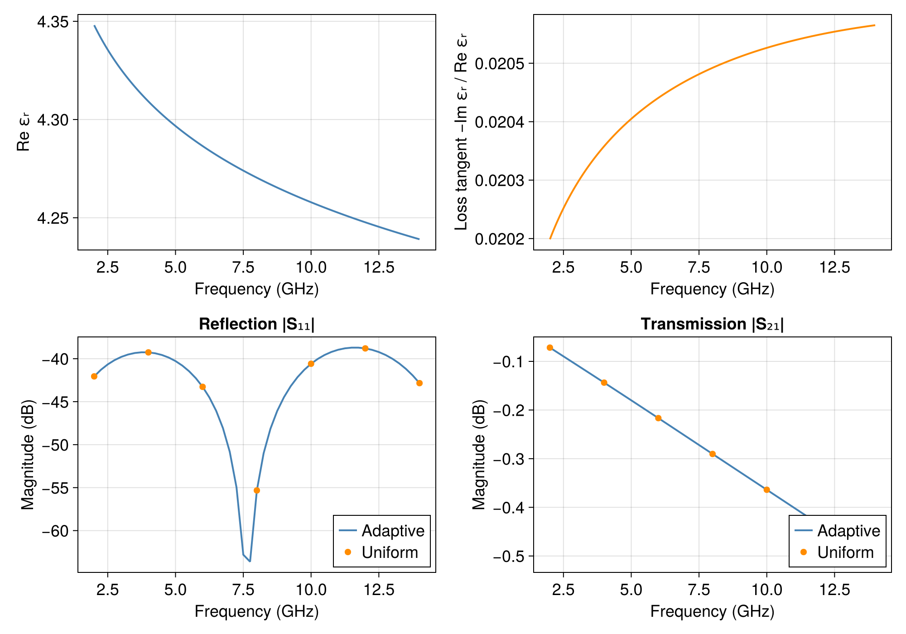

Dispersive Microstrip
The files for this example are in examples/microstrip/.
This example computes transmission and reflection along a 10 mm line on a dispersive, FR4-like substrate. The PEC strip and finite ground plane are both 4 mm wide, separated by 0.2 mm of dielectric, with air around the line. Equal strip and ground widths make this a compact finite-ground model, not an infinite-ground microstrip approximation.

The substrate mesh is shown above, with the air omitted. Its two large faces carry the PEC strip and ground plane; the short end faces are part of the two wave ports.
Numeric wave ports terminate the two end planes. The side, top, and bottom faces of the air box use first-order absorbing boundaries. The dielectric does not touch those absorbing faces: the port solve includes its frequency-dependent permittivity, while the absorbing condition uses air.
Material model
The substrate uses the additive Permittivity object:
"Permittivity": {
"HighFrequency": 4.0,
"Terms": [{
"Type": "DjordjevicSarkar",
"Strength": 0.056,
"LowerFrequency": 1.0e-3,
"UpperFrequency": 1.0e3
}]
}Its relative permittivity is
\[\epsilon_r(s)=4+0.056\log\frac{s+\omega_{\mathrm{hi}}}{s+\omega_{\mathrm{lo}}}, \qquad s=i\omega,\]
where the ordinary frequency bounds are 1 MHz and 1 THz. Over the 2–14 GHz sweep, $\operatorname{Re}\epsilon_r$ falls from 4.3480 to 4.2391, and $-\operatorname{Im}\epsilon_r/\operatorname{Re}\epsilon_r$ rises from 0.02020 to 0.02057. These parameters illustrate passive FR4-like dispersion; they are not a fit to a specified measured laminate. Positive strength and ordered positive frequency bounds make the model a passive continuum of Debye relaxations. Its stored electric energy uses $\operatorname{Re}\epsilon_r(\omega)$; this equality is specific to relaxation models, not a general rule for Drude or Lorentz oscillators.
Both ports solve for their mode at the current frequency. Their VoltagePath runs from the top strip to the ground plane, fixing the voltage polarity and the phase of the transmission coefficient.
Mesh and inputs
The mesh coordinates are in units of 0.1 mm ("L0": 1.0e-4). The shared mesh/mesh.jl generator also serves the magnetostatic regression cases. The air beyond the two end planes has no material definition and is removed by CleanUnusedElements, so those planes become exterior wave ports. Their mesh elements are oriented outward.
| Attributes | Role in this example |
|---|---|
| Volume 1 | Air around the line |
| Volume 2 | Dispersive substrate between the plates |
| Volume 3 | Air beyond the ports, removed on loading |
| Boundary 2 | Absorbing air-box faces |
| Boundaries 3, 4 | PEC plates and the strip's terminal patch |
| Boundaries 5, 7 | Port 1 at $x=-5$ mm |
| Boundaries 6, 8 | Port 2 at $x=+5$ mm |
microstrip_driven.json uses a uniform 2 GHz frequency step. microstrip_adaptive.json uses an adaptive reduced model with tolerance $10^{-4}$ and a 0.25 GHz output step. Both inputs report the substrate's energy and sample the electric and magnetic fields at its center. These outputs require field reconstruction, while the factored dispersive operators keep the reduced solves inexpensive.
Run from the example directory:
palace -np 1 microstrip_driven.json
palace -np 1 microstrip_adaptive.json
julia --project=.. microstrip.jlResults
The simulations write to postpro/driven/ and postpro/adaptive/. The adaptive run converges with nine full-order frequency samples. At the seven uniform-sweep frequencies, the largest complex S-parameter difference between the two runs is $2.2\times10^{-6}$. Replacing the substrate by its constant complex permittivity at each frequency gives the same scattering parameters to $3\times10^{-8}$; this comparison tests the constitutive response, not a general equivalence of stored-energy models.

Reflection remains below -38 dB and transmission decreases from about -0.07 dB to -0.49 dB across the band. The plotted uniform samples agree with the adaptive curve; the upper plots show the substrate's permittivity and loss tangent. Both runs have positive electric energy and substrate participation between zero and one. The largest $|S_{11}|^2+|S_{21}|^2$ is 0.9837; the remainder includes dielectric loss and radiation through the absorbing air-box faces, not dielectric absorption alone.
The plotting script generates postpro/microstrip.png. To regenerate the supplied mesh:
julia --project=.. -e 'include("mesh/mesh.jl"); generate_microstrip_mesh(filename="microstrip.msh")'